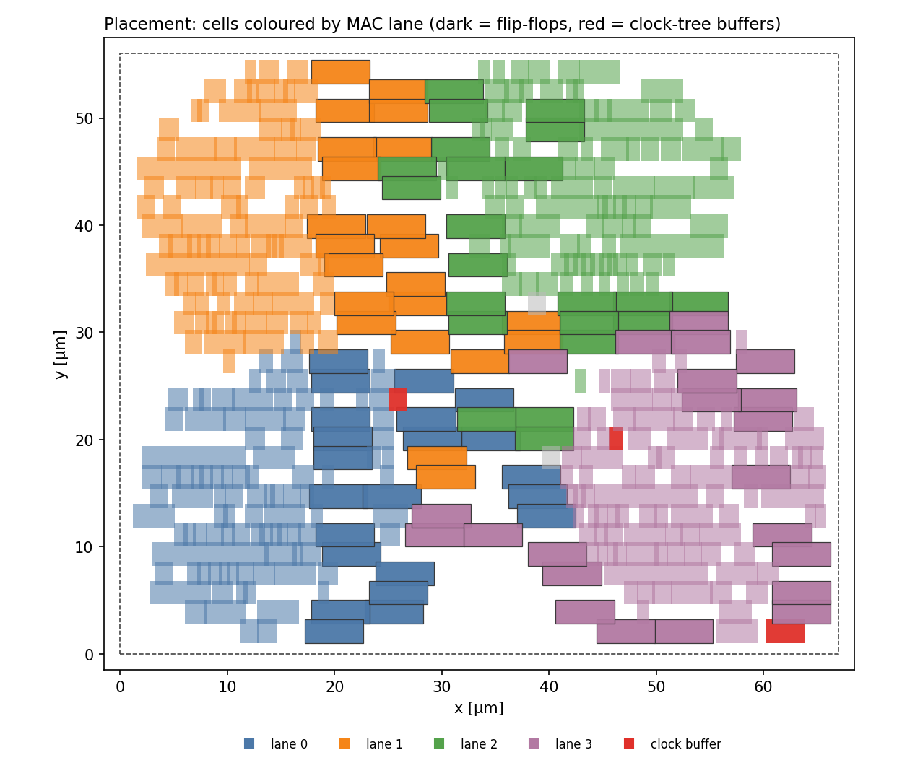
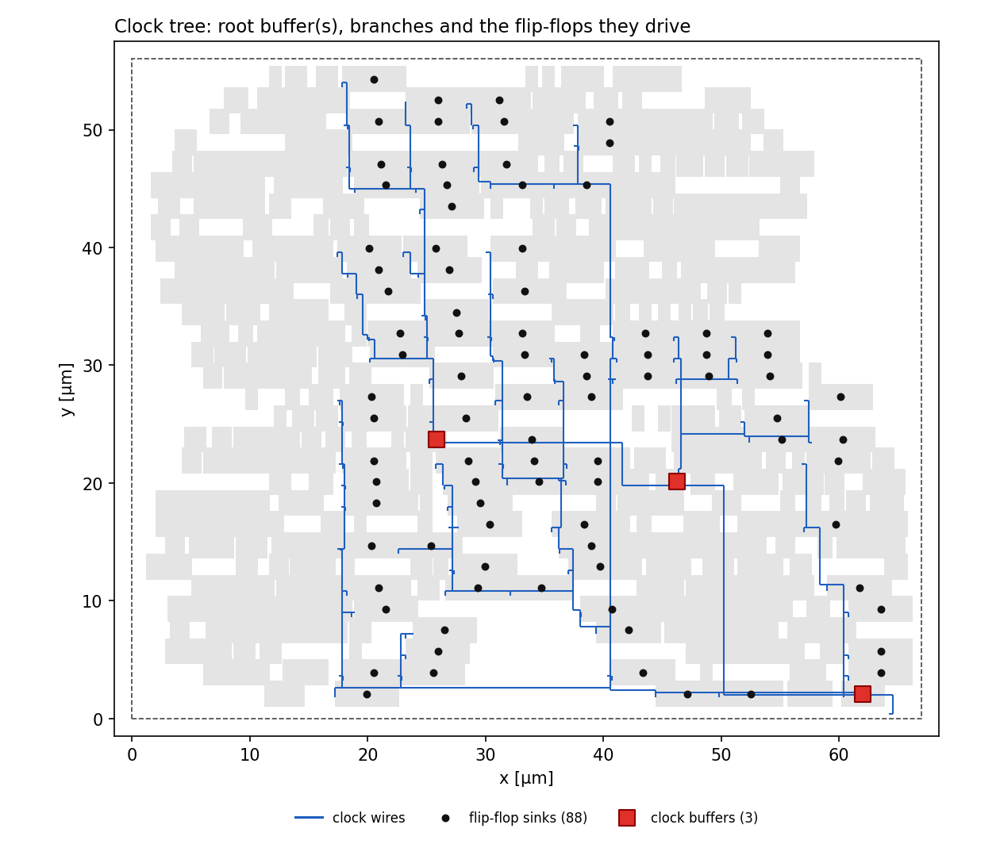
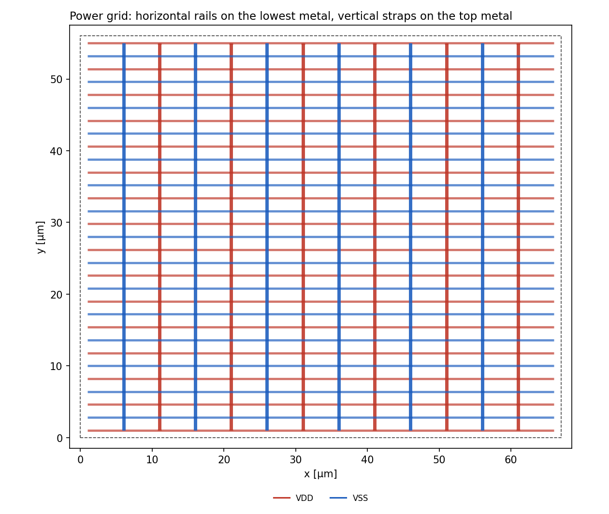

05 Place and Route
From floorplan to clock tree synthesis, routing and GDS output.
Background: what are place and route and a clock tree?
A netlist is a connection table saying which part connects to which; it has no position information. Place and route (P&R) puts the parts on the chip and connects them with metal wires.
- Floorplan: decide the size of the chip (block) and the positions of the pins.
- Power wiring: lay thick wires that bring electricity to every part.
- Placement: put the parts down. Parts that are strongly connected are placed close, which shortens wires.
- Clock tree synthesis (CTS): build a tree of buffers that delivers the clock to all registers at almost the same time.
- Routing: connect the parts with metal.
The longer a wire, the slower it is, so this is where the real speed first becomes visible. In the end, GDS, the drawing data to hand to the factory, is written out.
How to run
| Easiest | make pnr (from the top of the repository) |
|---|---|
| Directly | cd icc2; icc2_shell -f icc2.tcl >& icc2_run.log |
| Inputs | dc/MAC4.net.v (netlist), const/MAC4.sdc, technology and cell data (set in config) |
| Outputs | icc2/MAC4.gds (layout), MAC4.icc2.nopg.v and MAC4.icc2.lvs.v (netlists), MAC4.icc2.sdf, MAC4.def, reports |
| Check success | grep -E "^Error" icc2/icc2_run.log → nothing printed is OK / grep "slack (" icc2/MAC4.cts.timing.log | head -1 |
- Run
make synfirst. It takes about one and a half to two minutes. - To change the core size, edit
core_width/core_heightinicc2/icc2.tcl. - Every run rebuilds
icc2/MAC4.ndm(the old one is removed automatically).
The tool is Synopsys IC Compiler II (icc2_shell). It gives the netlist its real shape. Only with place and route do wire delay, the clock tree and the power grid appear.
Overview of the steps
- Create the library and read the netlist (
create_lib,read_verilog,link_block) - RC models and scenario: parasitic models, and a scenario that reads the SDC (setup and hold are both analysed)
- Floorplan: core size and pin placement (
initialize_floorplan,place_pins) - Power grid: vertical power straps, the cell-row power rails and the vias between them (
create_pg_*,compile_pg) - Placement:
place_optplaces the cells and optimises while watching timing - Clock tree synthesis + hold fixing:
clock_opt - Routing:
route_auto,route_opt,check_routes - Fillers fill the gaps
- Output: netlists (for verification), GDS, DEF, SDF
Floorplan
# --- floorplan parameters -------------------------------------------------
set core_width 65 ;# core width [um]
set core_height 54 ;# core height [um] (multiple of the row height)
set io2core_offset 1.0
set power_width 0.5
set power_offset 0.5
set increment 10.0 ;# power mesh pitch [um]Rule of thumb: total cell area ÷ target utilisation (about 50% here) ≈ core area. Too small and it cannot be routed; too large and the wires get long.
Clock tree synthesis (CTS)
# 8. Placement (+ pre-CTS optimization)
# =============================================================================
set_ignored_layers -max_routing_layer $LAYER_ROUTE_MAX
set_app_options -name place.coarse.continue_on_missing_scandef -value true
place_opt
connect_pg_net -automatic
save_block -as ${designname}/place_opt
redirect -file ${designname}.pre_cts.timing.log { report_timing -delay_type max -max_paths 3 }
# =============================================================================
# 9. Clock tree synthesis + post-CTS optimization (setup and HOLD fixing)
# =============================================================================
clock_opt
save_block -as ${designname}/clock_opt
redirect -file ${designname}.cts.skew.log { report_clock_qor -type summary }
redirect -file ${designname}.cts.timing.log { report_timing -delay_type max -max_paths 3 }
redirect -file ${designname}.cts.hold.log { report_timing -delay_type min -max_paths 3 }At placement time the clock is ideal (it reaches every flip-flop at the same moment). clock_opt builds a tree of clock buffers and evens out the arrival times at the flip-flops (the skew). At the same time it fixes hold violations, where data arrives too early, by inserting delay cells.
Clock Sinks Levels Repeater Latency Skew
clk 88 2 3 ~0.06 ~0.01 ← cts.skew.log (icc2/)Look at the result
So that you can check the result without a layout viewer, there is a script that draws pictures from the GDS and DEF (tools/render_layout.py, run python3 tools/render_layout.py).




What to look at in the reports
| File | What to check |
|---|---|
MAC4.pre_cts.timing.log | Setup before CTS (clock ideal) |
MAC4.cts.timing.log | Setup after CTS (clock propagated). Wire delay is now included, so the slack shrinks |
MAC4.cts.hold.log | Hold after CTS. Before fixing it tends to be negative |
MAC4.cts.skew.log | Skew, latency and number of buffers |
MAC4.check_routes.log | DRC / opens / shorts of the routing (should be 0) |
Exercises
- Widen
core_widthto 90 and run again. What happens to the wire length (Wire Length incts.skew.log)? - Compare the setup slack before and after CTS and explain why it changes.